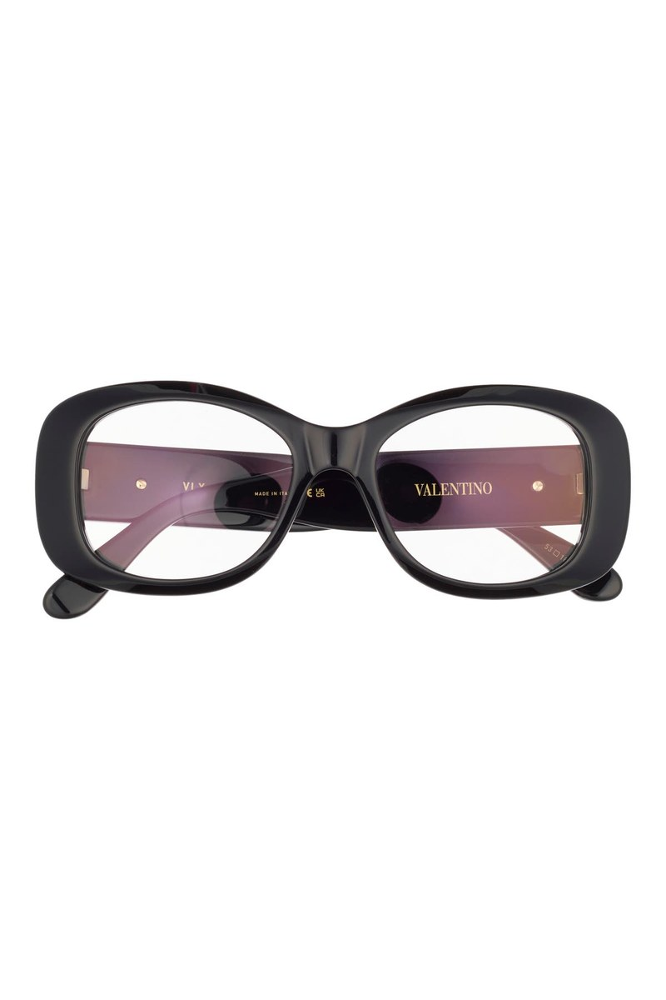
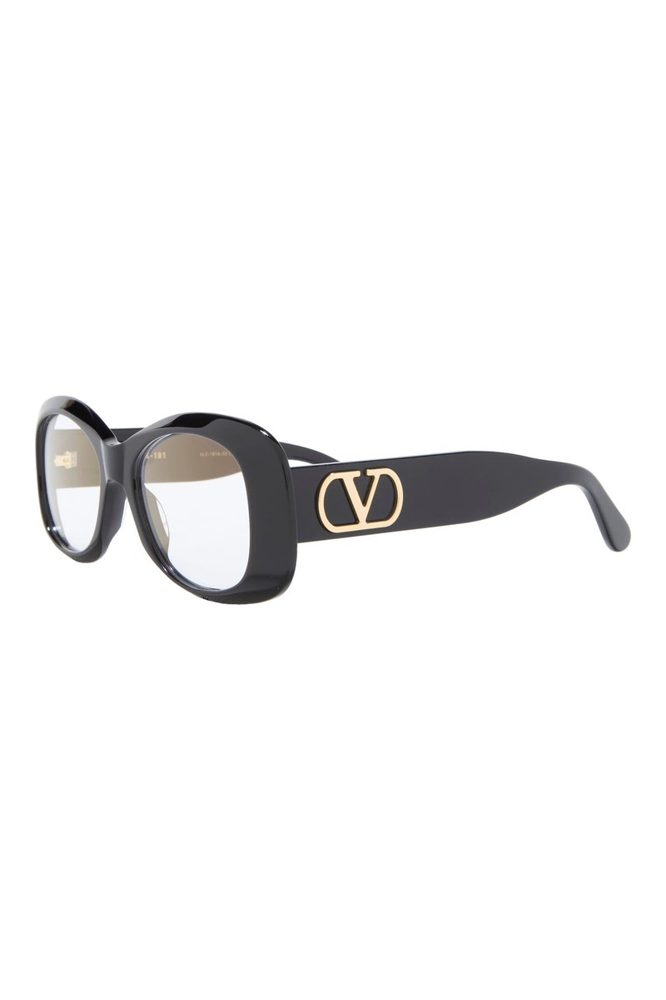
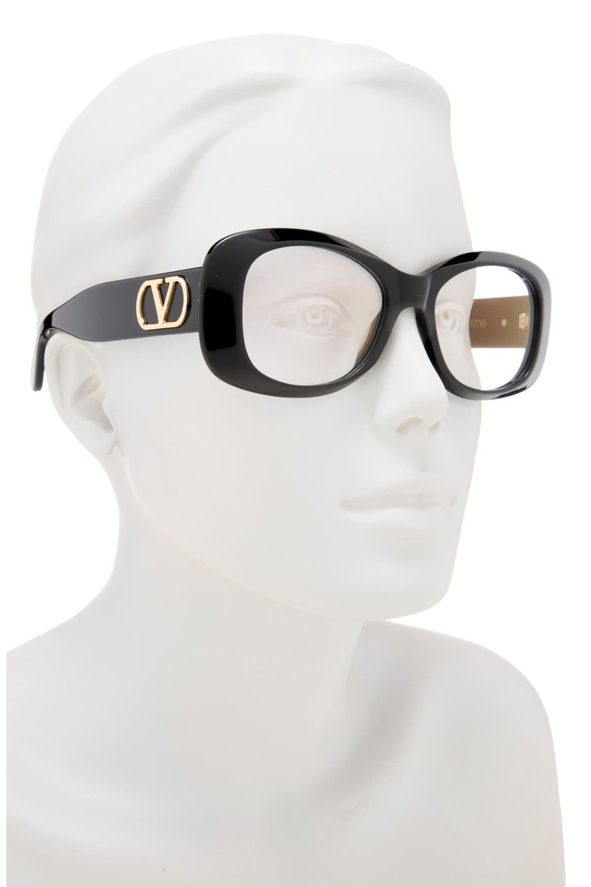

Valentino−40%
Valentino — оптические очки 46 мм, овальная оправа
Чёрный / прозрачный
Оптические очки Valentino с массивной овальной оправой и фирменными акцентами на заушниках. Ацетат, сделано в Японии. Ширина линзы 46 мм, мост 22 мм, длина заушника 142 мм. Линзы демонстрационные (неоптические).
$119.99$199.99
Размеры в наличии · 1
Единый размер